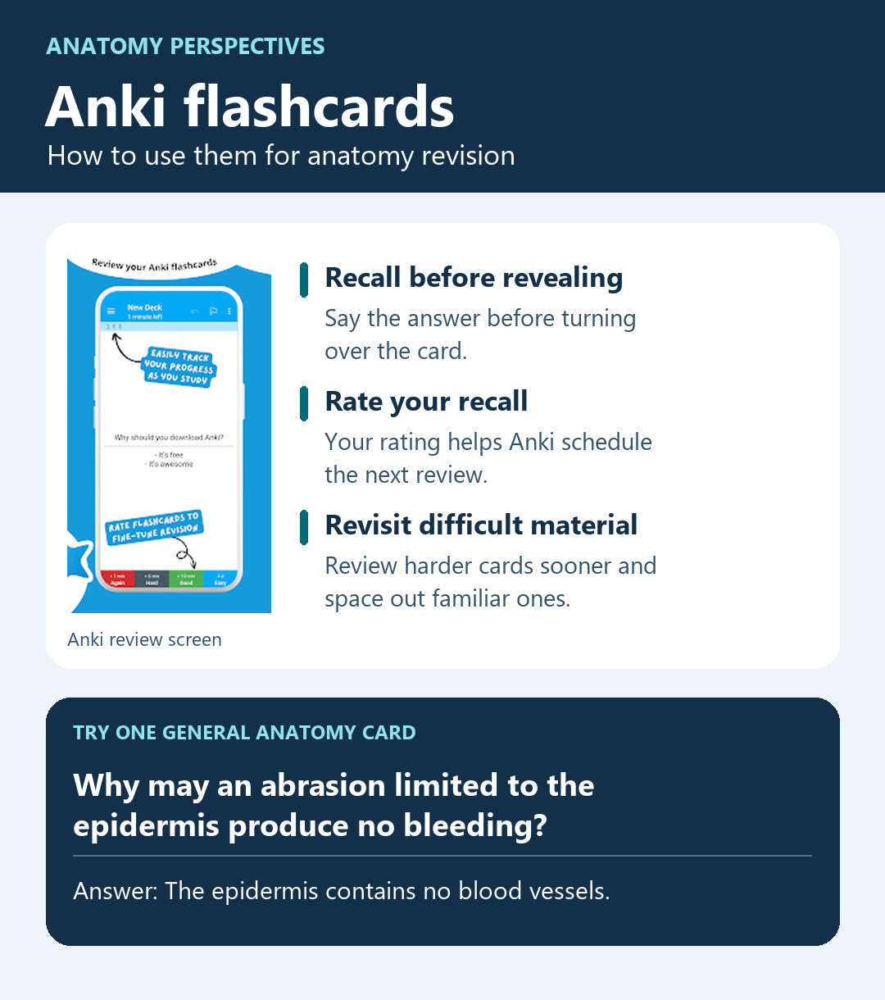

Anki Flashcards for Anatomy Revision
After a lecture, dissection or practical, try recalling a structure or explaining a relationship before reopening your notes. For example, ask yourself why an abrasion limited to the epidermis may produce no bleeding. Say your answer, then turn the card over to check it. Anki uses your self-rating to schedule reviews, bringing harder cards back sooner and spacing out those you recall easily. For medical students and teachers, this makes flashcards useful for revisiting anatomy between sessions and preparing for practicals and vivas.

Which Anki app should I use?
- Anki Desktop is the free computer app for Windows, macOS and Linux. Use it to import this file and organise your decks. Download Anki
- AnkiWeb is the free browser and sync service. Study your synced cards in a browser. Bulk file import happens in an Anki app. Open AnkiWeb
- AnkiDroid is the free Android app. It can sync your cards and review progress with AnkiWeb. Get AnkiDroid
- AnkiMobile Flashcards is the official paid app for iPhone and iPad. It syncs with the same AnkiWeb account. Find AnkiMobile on the App Store
Download the General Anatomy flashcards
Download General Anatomy flashcards (.txt)
The file contains 71 question-and-answer cards from the General Anatomy book, with tags for all 11 chapters.
Import the file and sync to your phone
- Download the file using the link above. If it opens as text in your browser, use Save as and keep the
.txtextension. - Open Anki Desktop. If you already use AnkiWeb, sync before importing. If Anki asks which direction to sync and your desktop collection is empty, choose Download from AnkiWeb to bring in your existing decks.
- Choose the deck. Use your existing General Anatomy deck, or select Create Deck on the deck list and give it that name.
- Import the file. In Anki Desktop, choose File → Import and select
general-anatomy-flashcards.txtfrom your Downloads folder. - Check the import preview. Set the note type to Basic, the deck to General Anatomy, and the separator to Tab. Confirm the columns map to 1 → Front, 2 → Back, and 3 → Tags. Leave Allow HTML off.
- Click Import. A first import into an empty deck should add 71 notes. Open General Anatomy and try a card.
- Sync to your other devices. Click Sync in Anki Desktop and sign in to AnkiWeb if prompted. For a first sync with an empty AnkiWeb account, choose Upload to AnkiWeb. Then refresh AnkiWeb in your browser, or open AnkiDroid or AnkiMobile and sync using the same account. If a new phone with an empty collection asks for a sync direction, choose Download from AnkiWeb.